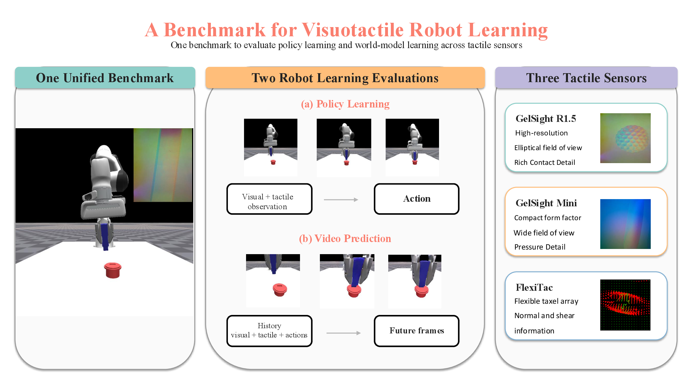
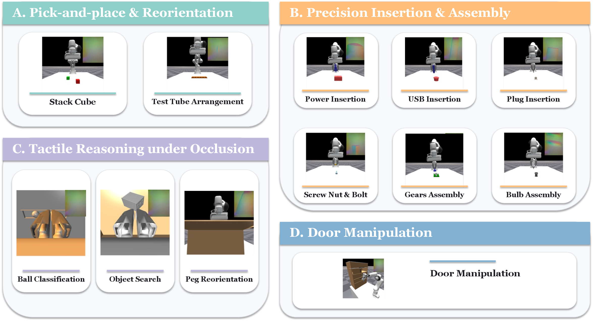
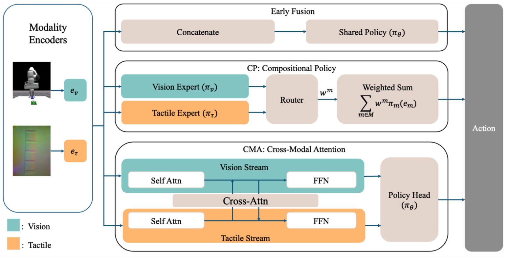
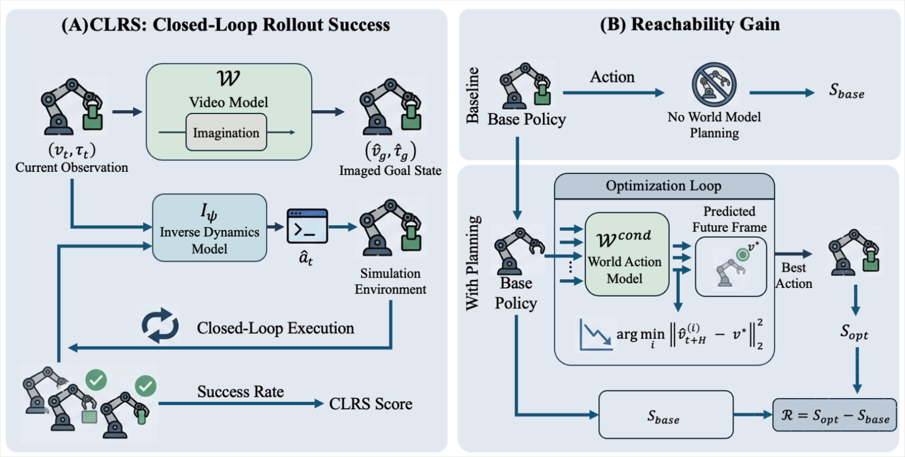

Peg Insertion
Goal: align a peg with its socket. Success: fully seat the peg.
Benchmarking Diverse Tactile Manipulation and Multimodal World Models
Tac-Bench project video · 2:57
Tac-Bench is a simulation benchmark for controlled and reproducible evaluation of tactile manipulation and multimodal world models. It controls task, sensor, data, and architecture choices so that gains from touch can be measured rather than confounded.

Fourteen contact-rich tasks span pick-and-place, insertion, assembly, classification, visual occlusion, in-hand orientation, and door manipulation.
Goal: align a peg with its socket. Success: fully seat the peg.
Goal: orient a USB plug to the port. Success: insert it to the seated pose.
Goal: align a power plug with its receptacle. Success: seat the plug completely.
Goal: place the gear on its shaft. Success: engage the target assembly pose.
Goal: thread the nut onto the bolt. Success: reach the required screw depth.
Goal: place the bulb into its fixture. Success: achieve the final assembled pose.
Goal: find the target through occlusion. Success: make verified target contact.
Goal: reorient a peg with limited visual access. Success: reach the target orientation.
Goal: sort balls by tactile properties. Success: place each ball in its assigned region.
Goal: arrange the test tubes in their holders. Success: place all tubes at target locations.
Goal: lift and stack the cube. Success: stabilize the cube at its target pose.
Goal: open the hinged cabinet door. Success: exceed the target hinge angle.
Goal: pull the cabinet drawer. Success: reach the required extension.
Goal: slide the cabinet door open. Success: reach the target travel distance.

Tac-Bench controls task data and unimodal encoders while comparing Early Fusion, Compositional Policy, and Cross-Modal Attention.

EF-DiT and EF-UNet concatenate visual and tactile embeddings before a shared policy network.
CP combines modality-specific diffusion experts through a learned router that assigns consensus weights.
CMA keeps dedicated modality streams and exchanges information through periodic cross-modal attention gates.
Video-fidelity metrics are paired with two functional probes: Closed-Loop Rollout Success (CLRS) and Reachability Gain.

Imagined visuo-tactile futures are evaluated by whether they can drive inverse dynamics and model-predictive optimization.
CLRS decodes actions from imagined goals and executes them in simulation, testing whether generated futures are physically reachable.
Reachability Gain measures whether model-predictive optimization improves an unassisted policy.
World-model target and executed rollout.
Generated visual goal and simulator execution.
The complete CoRL 2026 submission manuscript and source are included with this repository.
@article{anonymous2026tacbench,
title={Tac-Bench: Benchmarking Diverse Tactile Manipulation and Multimodal World Models},
author={Anonymous},
year={2026}
}